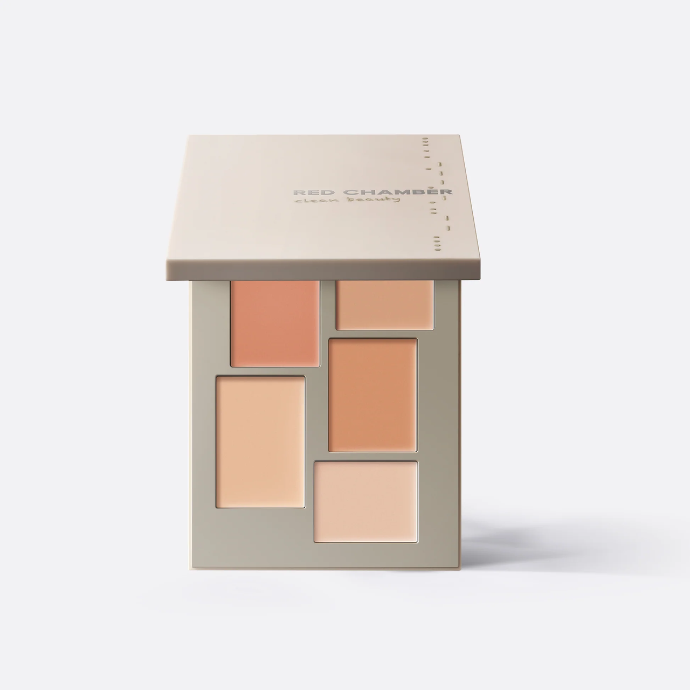
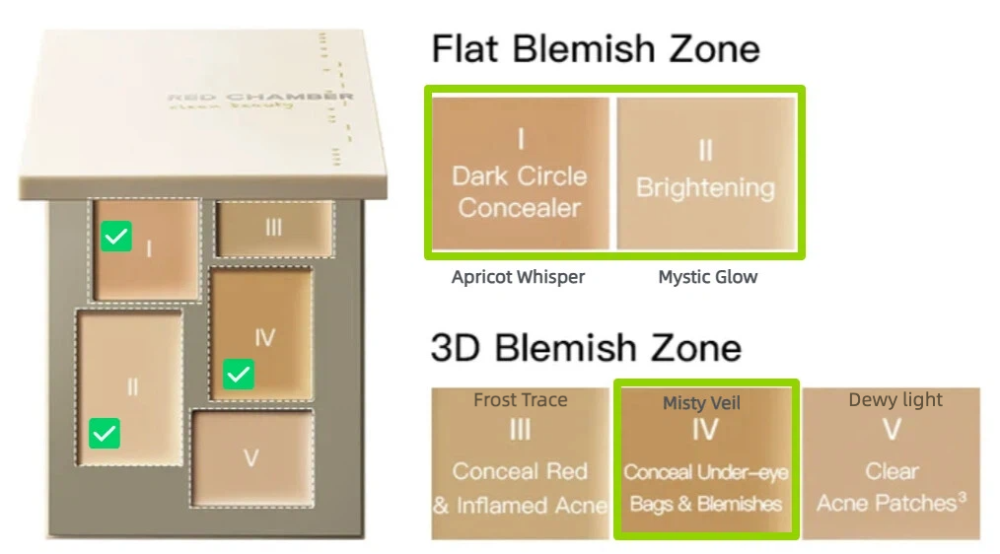
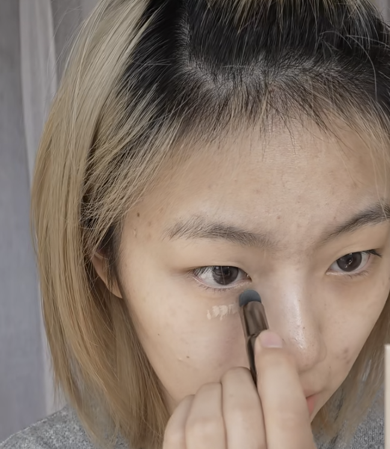
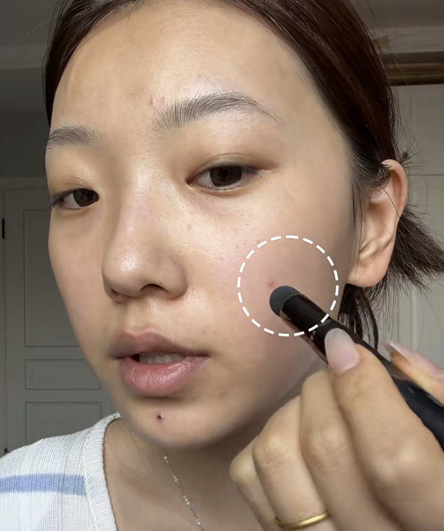
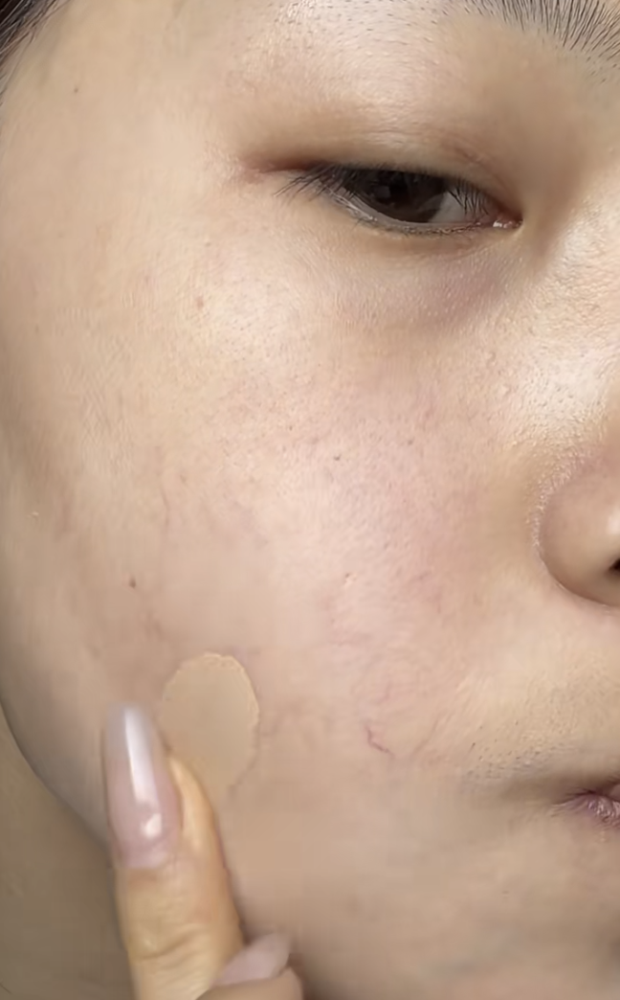

RED CHAMBER
HARUKI CONCEALER PALETTE
Concealer Palette
01 · Concealer Palette

- I Apricot Whisper
-
Dark Circle Concealer
- II Mystic Glow
-
Brightening
- III Frost Trace
-
Conceal Red & Inflamed Acne
- IV Misty Veil
-
Conceal Under-eye Bags & Blemishes
- V Dewy light
-
Clear Acne Patches

Selling points
- ·5 shades in one palette, covers dark circles, redness, acne marks and under-eye bags
- ·Features a hydrating concealer prime that helps prep and moisturize targeted areas, prevent patchiness and caking.
- ·Comes with an easy-to-follow shade guide card, beginner-friendly
- ·Gentle botanical extracts, suitable for acne-prone and sensitive skin
- ·Hydrating texture, works on all skin types
02 · Script Direction
HOOK — Pick whichever one fits you, they all open on a strong before and after.
- 1Half your face concealed, half of it bare. Something like "I've been using this concealer lately and it's actually insane, you can see it on my face."
- 2Open on your under-eye circles after a late night, "these circles are so bad right now", then cut straight to the finished face, "let me teach you how to cover them in 5 minutes."
- 3Any other strong before and after opening works, as long as the contrast is obvious in the first seconds.
BODY — Before you start applying, introduce the palette. The shade guide card on the back makes it beginner-friendly, it's clean beauty, and it's gentle enough for acne-prone and sensitive skin.
Show the skin concerns up close before application. Zoom in on dark circles, acne marks, redness, and uneven areas so viewers can clearly see what you're covering.
Using the prime shade（Dewy light）before applying any concealer, explain how it adds targeted hydration so the concealer sits better and lasts longer.
Just focus on using the salmon-toned shade (Apricot Whisper), the brightening shade (Mystic Glow) and the spot-concealing shade (Misty Veil).



Make the contrast strong and obvious in before-and-after.
ENDING — Wrap up naturally. Something like "one palette and everything's covered, honestly recommend it."
03 · Reference
04 · Requirements
This one’s going up on your account, so it should look like you. These few things just help it land, and a good video keeps working for you long after you post it.
Required
- ⭐The official shade names are for your reference only, in the voiceover just describe what each one does, e.g. say "the priming shade" instead of "Dewy Light", and "the salmon-toned shade" instead of "Apricot Whisper"
- ⭐Use close-up shots to show it doesn't crease under the eyes.
- ⭐Mention the shade guide card on the back of the product.
- ⭐Express your genuine feelings about using it.
- ⭐Mention the brand naturally in voiceover or towards the end
Do not
- ❌No dim lighting
- ❌Avoid heavy filters to ensure true-to-life color accuracy
- ❌Don't put "RED CHAMBER" in the cover/title ― keep it natural, not ad-heavy